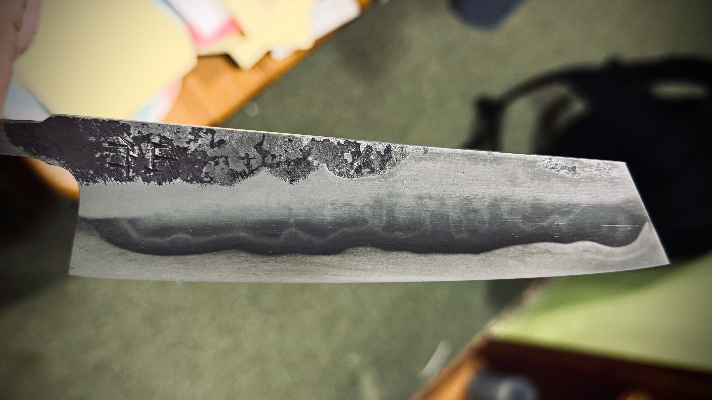

01 / KOVÁNÍ
Kování
Ocel je nejprve zahřáta na vhodnou teplotu a následně tvarována pomocí kladiva, kovadliny a dalších nástrojů. V této fázi vzniká základní tvar budoucí čepele a materiál dostává svůj první charakter.

Každá čepel prochází několika kroky, které postupně určují její tvar, vlastnosti, vzhled a výsledný vizuál. Od pádu kladiva k přípravě pokrmu.
Výroba ručně kované čepele není pouze o jejím vytvarování. Každý následující krok navazuje na předchozí a společně vytvářejí výsledný nástroj.
Ocel je nejprve zahřáta na vhodnou teplotu a následně tvarována pomocí kladiva, kovadliny a dalších nástrojů. V této fázi vzniká základní tvar budoucí čepele a materiál dostává svůj první charakter.
Po vykování přichází na řadu přesné broušení. Odstraňuje se přebytečný materiál a postupně vzniká geometrie čepele, její výbrus a základní tvar ostří.

Čepel je tepelně zpracována tak, aby se změnila struktura oceli a získala požadované vlastnosti. Správně provedené kalení je jedním z klíčových kroků ovlivňujících výslednou tvrdost čepele.

Po kalení následuje popouštění. Čepel se znovu tepelně zpracuje při nižší teplotě, aby se upravily vlastnosti zakalené oceli a vytvořila vhodná kombinace tvrdosti a houževnatosti.

Po tepelném zpracování se povrch čepele dále upravuje. Postupným zjemňováním povrchu vzniká požadovaný vzhled a zároveň se připravuje povrch pro další úpravy.

U vybraných čepelí může následovat leptání, které zvýrazní strukturu materiálu, vrstvení nebo kontrast mezi jednotlivými druhy oceli. Výsledný vzhled závisí na použitých materiálech nebo způsobu zpracování.

Po dokončení čepele přichází na řadu rukojeť. Materiál, tvar i rozměry se přizpůsobují konkrétní čepeli a způsobu jejího používání. Následuje přesné opracování, broušení a finální povrchová úprava.

Posledním krokem je vytvoření finálního ostří. Čepel se postupně doostří a zkontroluje tak, aby odpovídala svému účelu a byla připravena k používání.

Prohlédněte si hotové nože a další ukázky kovářské práce.
PROHLÉDNOUT PORTFOLIO →